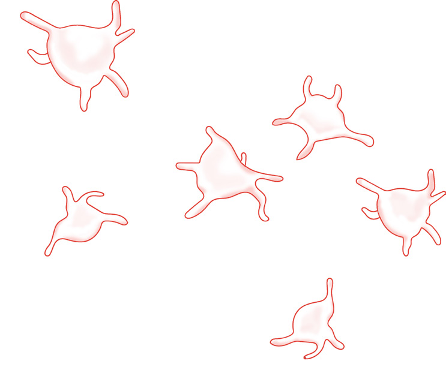

111
Student’s Book - Form Two

Biology for Secondary Schools

Figure 5.12: Blood platelets
Functions of platelets
Platelets play an important role in clotting blood.
The clotting process: Blood clotting or coagulation is an important process that
prevents
excessive
bleeding
when a blood vessel is injured. Blood platelets and proteins in the plasma work together to stop bleeding by forming a clot over the injury.
Blood platelets at the site of an injury produce thromboplastin which starts off the clotting process. Thromboplastin, with the help of vitamin K and calcium, neutralises heparin, an anticoagulant in the blood; and converts prothrombin, which is an inactive plasma protein to thrombin. This is an active plasma protein, which catalyses conversion of soluble fibrinogen to insoluble fibrin.
Fibrin forms a network of fibers that trap debris and blood cells. These result into a clot at the site of the wound
preventing further loss of blood. The clear fluid called serum which oozes out of the wound remains when the rest of the blood clots. The clot stops further bleeding and prevents entry of bacteria into the body through the wound.
Blood groups
Task 5.5
Use the library and internet sources to
search for information on ABO blood
grouping system and Rhesus factor.
Then, write short notes.
Grouping of human blood is done using the ABO blood grouping system and the
Rhesus factor. Genetic materials that determine blood groups are inherited
from the parents.
The ABO blood grouping system
The ABO blood grouping system is the classification of human blood based on two factors. The first factor is the presence or absence of antigen A or antigen B on the membranes of the red blood cells. The second one is the presence or absence of antibody a or antibody b in the blood plasma.
A person cannot have a certain antigen on the membrane of the red blood cell and the corresponding antibody in the plasma. For example, one cannot have both antigen A and antibody a.
This would cause agglutination or clumping together of red blood cells.
08/04/2026 10:18:31